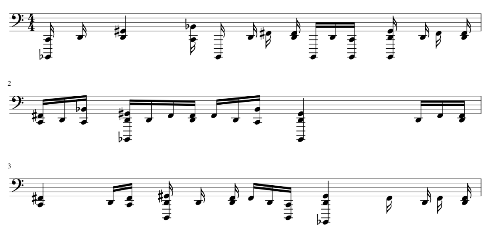
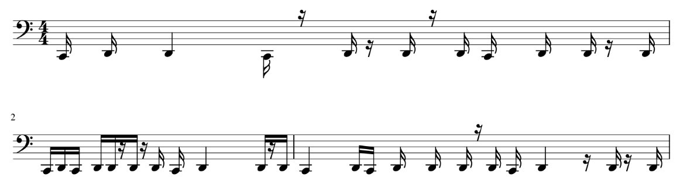

Beats
In order to generate beats, we started with Magenta's Groove MIDI Dataset. This dataset contains over 1150 MIDI files and is mostly in 4/4 time with a few exceptions. When imported into music21, the dataset is represented as a regular score would be, but each MIDI pitch number corresponds to a unique drum. For example, the pitch C1, corresponding to MIDI pitch 36, represents a kick drum.
We discovered that while chords and melodies sound horrendous when joined together randomly, beats could generally be processed independent from chords and melodies. The main obstacle in joining these beats with chords and melodies is with rhythm.
To solve the rhythm problem, we used the heuristic of only keeping in kicks and snares (corresponding to MIDI pitches 36, 38, and 40 in the data representation). We did this because we saw that kicks and snares often lie on the main beat, with other drums acting as embellishments between these beats. This also kept our beats simple.
In order to do this, we loaded the Groove dataset into music21, iterated through each "note" (or chord, representing multiple drums on one beat), and removed everything that wasn't a kick or snare. This was our final beat representation.
Below is the first two measures of one of the Groove MIDI samples, before filtering:
The same sample, after filtering:
